Web
and back-end utilities for Wikipedia
Introduction

- Wikipedia: free encyclopedia that anyone can edit
- Depends on volunteer contributions, mostly
- Low number of technical contributors
- High demand for this kind of support
Objectives
- To provide the Spanish Wikipedia with a community-supported bot that applies MoS rules
- To build a website that the LGBT+ WikiProject can use to display their work, common goals and achievements.
Context and justification
Bot
- Users invest a significant amount of time applying Manual of Style (MoS) rules.
- Many of these rules can be applied automatically through technical means.
- Less time dedicated to implementing MoS means more time creating content → primary goal of the encyclopedia
LGBT+ WikiProject website
- Group of users dedicated to improving LGBT+ content on the Spanish Wikipedia
- Low amount of technical editors among them
- Other user groups already have their own webpage
LGBT+ WikiProject website

Design: web neobrutalism
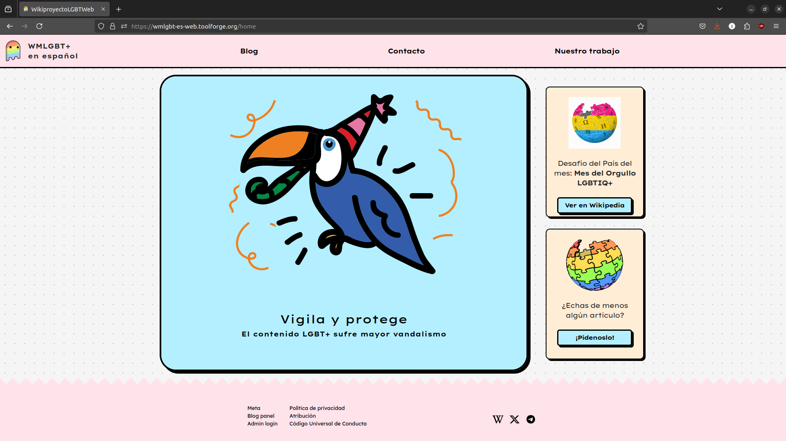

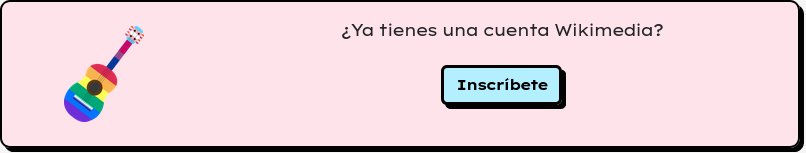
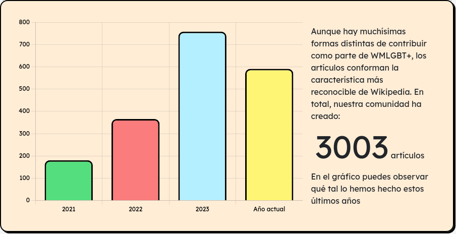
Characteristics
- Built using Angular 17.3
- Single-page application (SPA)
- Smooth transitions
Technologies
- Uses Bootstrap
- Hosted in Toolforge
- Interacts with MediaWiki API
- Has its own database (MariaDB)
- Authentication via MediaWiki OAuth
- Uses Angular Animations
Architecture
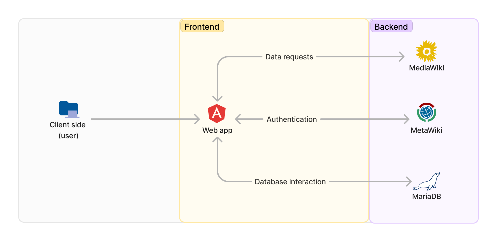
Blog component
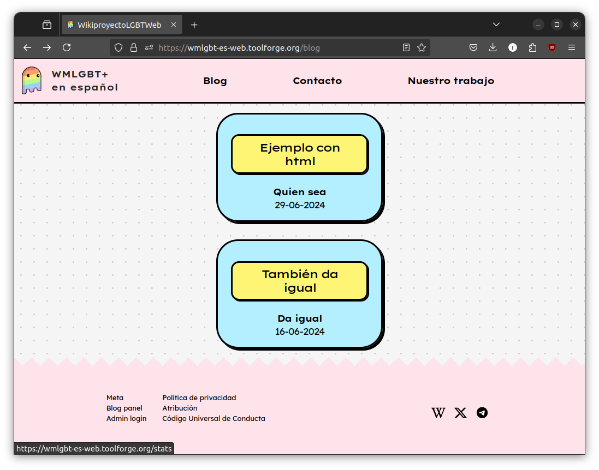
Stats component
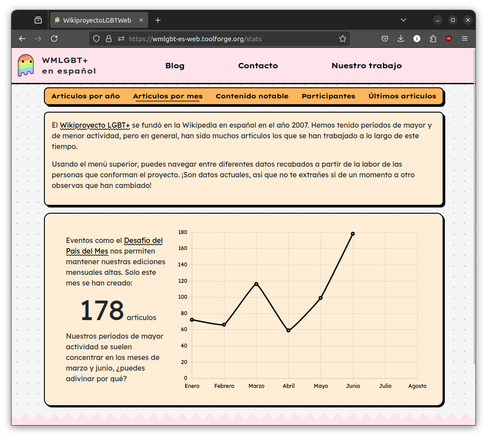
Form component
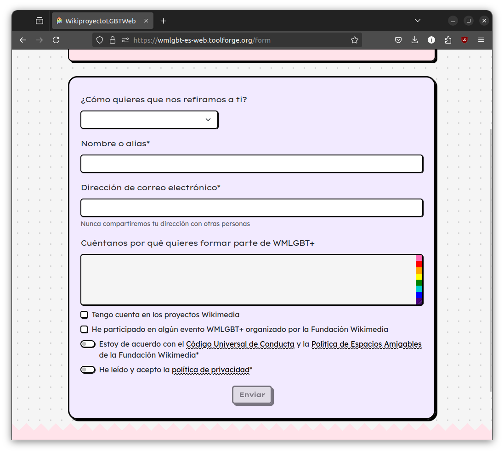
Blog admin panel component
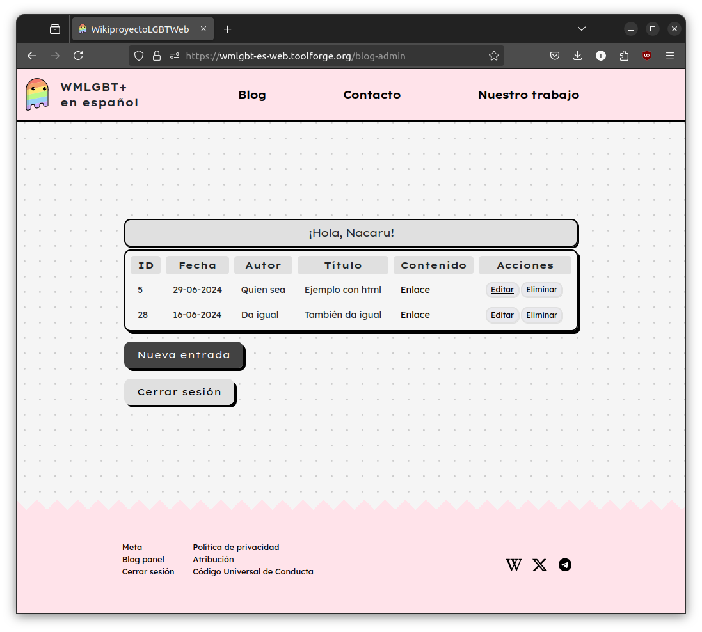
Blog edit component
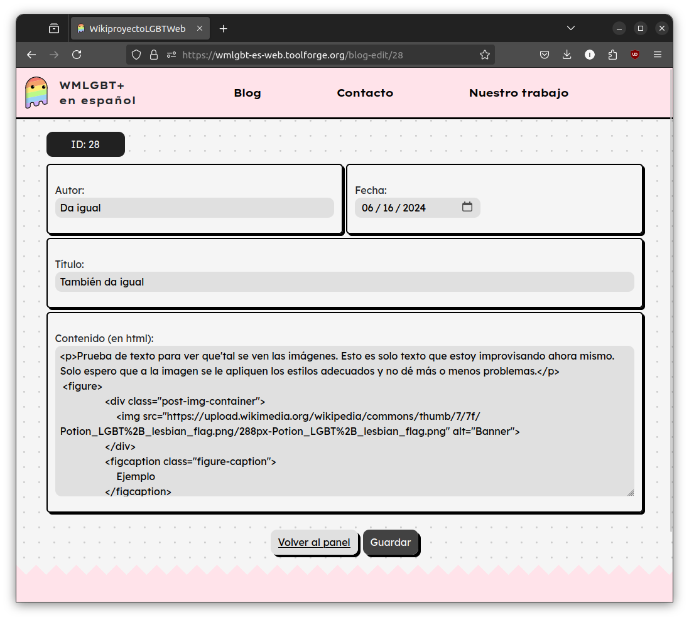
API interactions
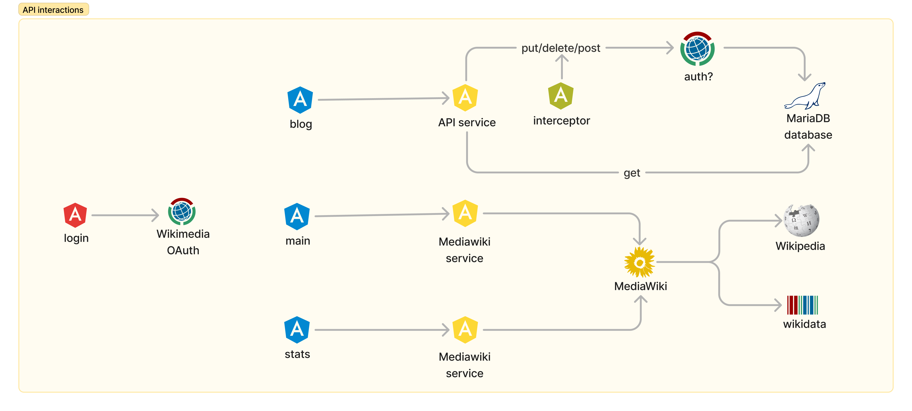
Manual of Style Bot
Asking for permission
Bots need community authorisation first 
Technologies
- Uses node.js
- Uses mwn, a comprehensive bot framework
- Written in TypeScript
- Interacts through the MediaWiki API
- Thorough log of all the actions
Architecture
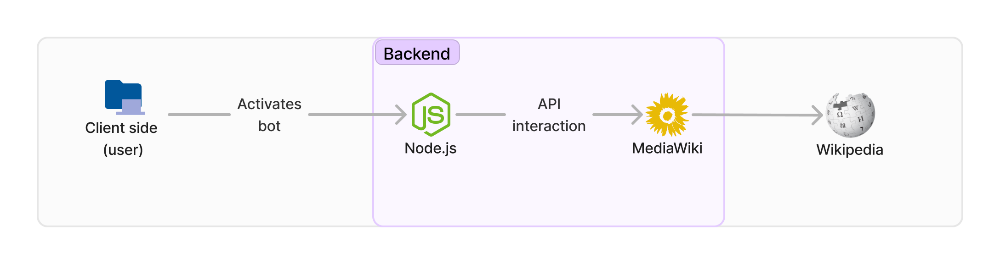
Action
The bot erases links to internal dates in articles that are not related to the calendar
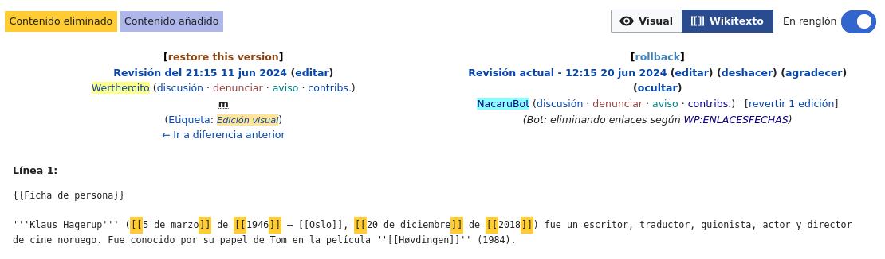
Log
It logs every action it carries out
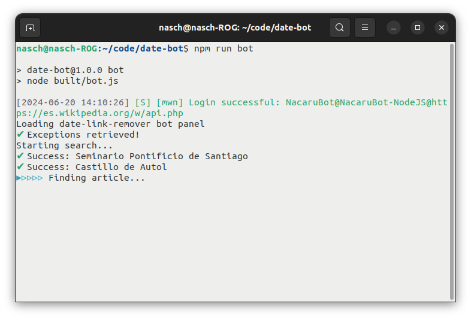
Log is also visible on Wikipedia 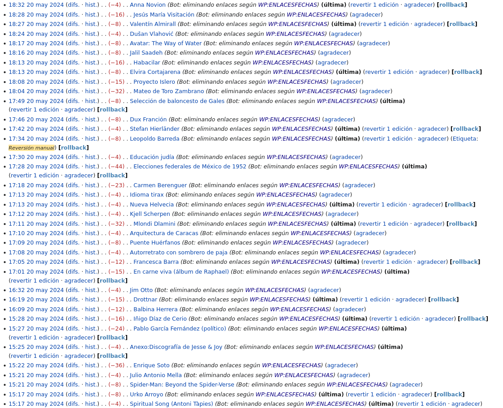